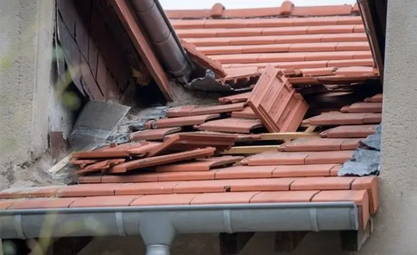
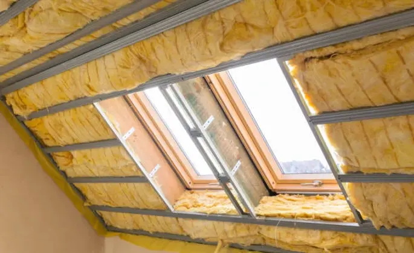
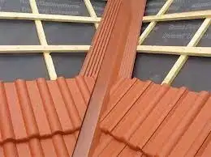
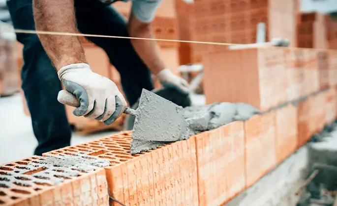
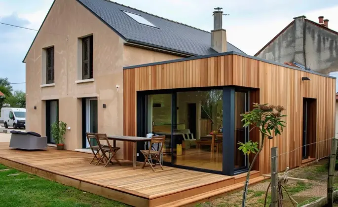
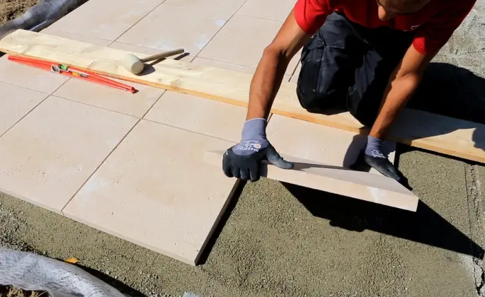
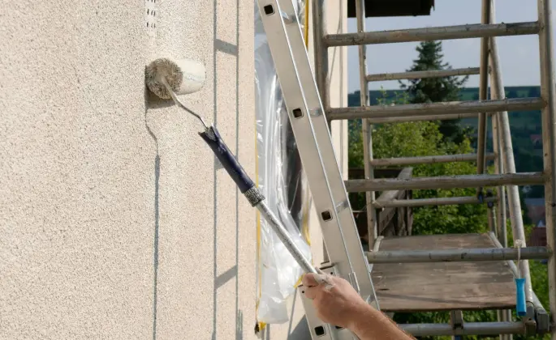
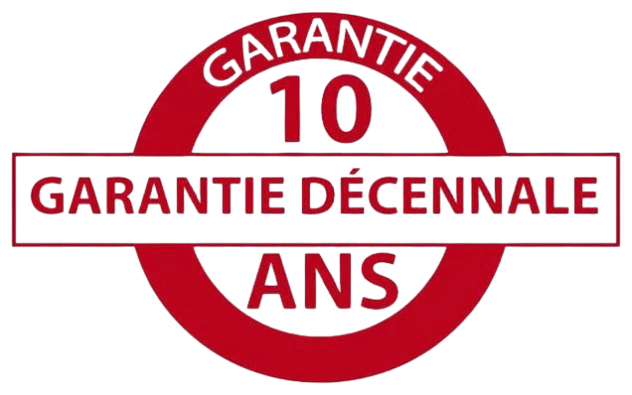

NOS SERVICES

RÉPARATION TOITURE
À Avant-lès-Marcilly, notre équipe intervient en urgence pour remplacer vos tuiles cassées, réparer les fuites et garantir la solidité de votre couverture face aux intempéries.
PLUS D'INFO
NETTOYAGE & DÉMOUSSAGE TOITURE
Préservez l’état de votre toiture à Avant-lès-Marcilly grâce à notre service de nettoyage complet qui élimine mousses et salissures tout en prolongeant sa durée de vie.
PLUS D'INFO
ISOLATION TOITURE
Optimisez le confort de votre habitation à Avant-lès-Marcilly avec une isolation performante des combles et de la toiture pour réduire vos factures d’énergie toute l’année.
PLUS D'INFO
ÉTANCHÉITÉ TOITURE
Protégez durablement votre maison à Avant-lès-Marcilly en renforçant l’étanchéité de votre toit ou terrasse contre l’humidité et les infiltrations d’eau.
PLUS D'INFO
MAÇONNERIE
Réalisez vos projets de construction ou de rénovation à Avant-lès-Marcilly avec notre savoir-faire en maçonnerie : murs, murets, terrasses et structures en béton.
PLUS D'INFO
AGRANDISSEMENT
Besoin de plus d’espace ? Nous réalisons votre agrandissement de maison à Avant-lès-Marcilly avec des finitions harmonieuses et des matériaux de qualité.
PLUS D'INFO
DALLE BÉTON
Nous posons des dalles béton résistantes pour vos terrasses, abris ou allées à Avant-lès-Marcilly, en assurant un sol stable, droit et durable.
PLUS D'INFO
RAVALEMENT DE FAÇADE
Redonnez un aspect neuf à votre maison à Avant-lès-Marcilly grâce à un ravalement de façade complet : nettoyage, réparation et finition esthétique durable.
PLUS D'INFORéparation de toiture : À Avant-lès-Marcilly, la réparation de toiture est primordiale pour préserver votre maison des infiltrations et renforcer sa protection face aux intempéries. Que ce soit pour changer des tuiles cassées, colmater une fuite ou restaurer un élément abîmé, notre équipe intervient rapidement pour garantir l’étanchéité et la performance thermique de votre couverture.
Nettoyage et démoussage de toiture : Le climat d’Avant-lès-Marcilly favorise l’apparition de mousses sur les toitures. Un entretien régulier permet d’éviter les dégradations prématurées. Grâce à notre service de nettoyage et démoussage, votre toit retrouve son éclat, tout en restant parfaitement protégé contre l’humidité et les infiltrations.
Isolation de toiture : Pour améliorer votre confort à Avant-lès-Marcilly et réaliser des économies d’énergie, l’isolation de toiture est incontournable. Nous mettons en œuvre des solutions performantes qui limitent les pertes de chaleur en hiver et conservent la fraîcheur en été, tout en améliorant l’acoustique de votre logement.
Étanchéité de toiture : Pour éviter toute infiltration à Avant-lès-Marcilly, une toiture parfaitement étanche est essentielle. Nous appliquons des solutions adaptées à votre type de toit pour prévenir durablement les dégâts liés à l’humidité et assurer la pérennité de votre habitation.
Maconnerie générale : Notre entreprise intervient à Avant-lès-Marcilly pour tous vos travaux de maçonnerie : fondations, murs, terrasses, murets ou dalles. Chaque chantier est mené avec rigueur et professionnalisme pour garantir une structure fiable et conforme à vos exigences.
Agrandissement de maison : À Avant-lès-Marcilly, agrandir votre maison est un excellent moyen d’optimiser votre espace de vie. Nous concevons des extensions harmonieuses, parfaitement intégrées à votre habitation existante, pour allier confort, modernité et valorisation de votre bien.
Pose de dalle béton : Pour vos aménagements extérieurs à Avant-lès-Marcilly, la dalle béton est une base incontournable. Nos professionnels réalisent des dalles robustes, durables et parfaitement nivelées pour accueillir vos terrasses, abris ou extensions.
Ravalement de façade : Donnez une nouvelle jeunesse à votre maison à Avant-lès-Marcilly avec notre service de ravalement. Nettoyage, traitement, enduit et peinture : nous redonnons éclat et protection à vos murs extérieurs tout en renforçant l’isolation et la valeur de votre bien.
UNE ÉQUIPE EXPÉRIMENTÉE AU SERVICE DE VOS TRAVAUX À Avant-lès-Marcilly
À Avant-lès-Marcilly, notre équipe expérimentée s’appuie sur des outils modernes et un savoir-faire éprouvé pour vous garantir des prestations de qualité, durables et parfaitement adaptées à vos besoins. Qu’il s’agisse de réparer une toiture, de réaliser un démoussage, d’assurer l’étanchéité de votre toit ou terrasse, ou de concrétiser des travaux de maçonnerie, pose de dalle béton, agrandissement ou ravalement de façade, nous vous accompagnons avec réactivité et professionnalisme pour des résultats à la hauteur de vos attentes.
NOS TARIFS
DES PRIX JUSTES ET TRANSPARENTS À Avant-lès-Marcilly
Installés à Avant-lès-Marcilly, nous proposons des prestations de qualité dans les domaines de la toiture, étanchéité, nettoyage, ravalement, maçonnerie, extension et dalle béton, à des tarifs compétitifs. Chaque devis est établi sur mesure en fonction de votre besoin, avec un engagement clair sur les coûts et les délais. Pour une estimation gratuite, appelez-nous au 06 66 97 17 50 ou remplissez notre formulaire en ligne.
DEVIS GRATUITCOUVREUR RENOVATION 10 À Avant-lès-Marcilly : UN PARTENAIRE DE CONFIANCE
En choisissant Couvreur Rénovation 10 à Avant-lès-Marcilly, vous bénéficiez d’un service de proximité fiable, rigoureux et transparent. Nous intervenons pour la réparation de toitures, l’étanchéité, le nettoyage/démoussage, les travaux de façade, d’agrandissement, de maçonnerie ou pose de dalle béton. Chaque chantier est réalisé avec soin, dans le respect des normes et de votre tranquillité.
GARANTIE DÉCENNALE

Tous nos travaux à Avant-lès-Marcilly sont couverts par une garantie décennale, valable 10 ans à compter de la réception du chantier. C’est pour vous la certitude de prestations solides et conformes, que ce soit pour une réparation de toiture, ravalement, maçonnerie, dalle béton ou extension.
ENTRETIEN RÉGULIER AVEC NOS CONTRATS
CONTRATS PONCTUELS & ANNUELS
Nos contrats d’entretien à Avant-lès-Marcilly vous permettent de bénéficier d’un suivi continu de l’état de votre toiture, façade ou maçonnerie. Qu’il s’agisse d’interventions ponctuelles ou d’un contrat annuel, nous vous garantissons réactivité, conseils et entretien optimal de vos extérieurs. Nos services couvrent notamment la réparation de toiture, le démoussage, l’étanchéité, le ravalement et l’entretien maçonnerie.
VOTRE ENTREPRISE MULTI-SERVICES À Avant-lès-Marcilly
Depuis plus de 20 ans à Avant-lès-Marcilly, Couvreur Rénovation 10 accompagne les habitants dans tous leurs projets de rénovation extérieure. Réactifs et disponibles, nous intervenons sur des chantiers de toiture, étanchéité, démoussage, maçonnerie, pose de dalle béton, ravalement ou extension de maison.
En cas d’urgence, nous assurons des interventions rapides et efficaces. Nous sommes également à votre disposition pour des contrôles réguliers et entretien préventif, afin de préserver durablement l’état de votre habitat.
Disponible 7j/7 et 24h/24 à Avant-lès-Marcilly, notre équipe s’engage à répondre rapidement à vos demandes, avec un accompagnement professionnel du premier rendez-vous à la livraison du chantier.
NOS VALEURS
QUALITÉ
UNE EXIGENCE DE CHAQUE INSTANT
À Avant-lès-Marcilly, nous garantissons un travail rigoureux, précis et durable. Chaque chantier bénéficie d’une attention particulière pour vous offrir une finition soignée, conforme à vos attentes.
PASSION
UN ENGAGEMENT VISIBLE DANS CHAQUE DÉTAIL
Nous aimons notre métier, et cela se reflète dans la qualité de nos réalisations. À Avant-lès-Marcilly, chaque projet est réalisé avec sérieux, enthousiasme et souci du résultat.
ENGAGEMENT
RESPECT DES DÉLAIS ET DU CLIENT
Nos engagements sont clairs : ponctualité, respect du devis, propreté du chantier. Nous nous impliquons pleinement pour vous garantir une satisfaction totale à Avant-lès-Marcilly.
CONFIANCE
UNE RELATION DURABLE AVEC NOS CLIENTS
La transparence, l’écoute et la proximité sont au cœur de notre relation client. Nous construisons avec vous un lien de confiance, essentiel à la réussite de vos projets à Avant-lès-Marcilly.